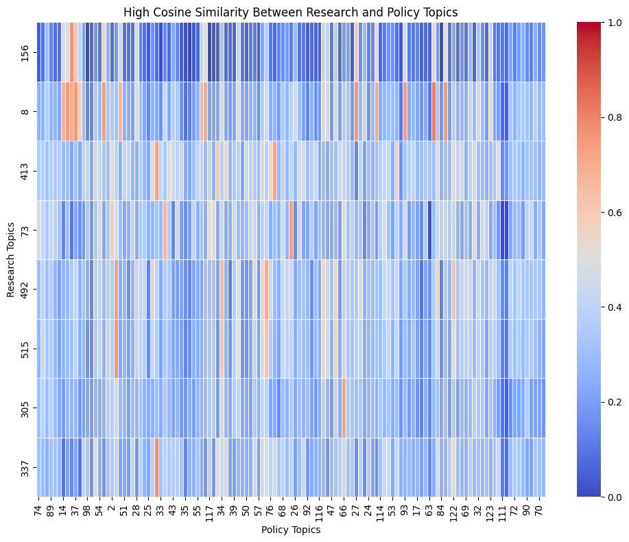
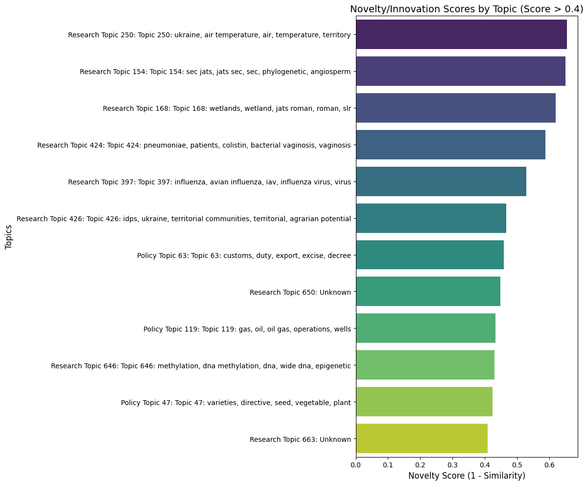
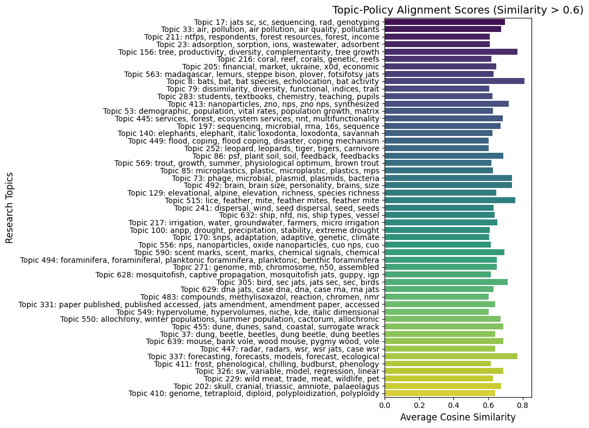

Trends in Policy
Understanding Policy Trends

This section explores the alignment between policy and scientific aims in wildlife conservation over the past decade.
Cosine Similarity Topics Comparison

Policy/Scientific Research Similarity Network
Novelty Scores

Alignment Between Policy and Scientific Research Topics
